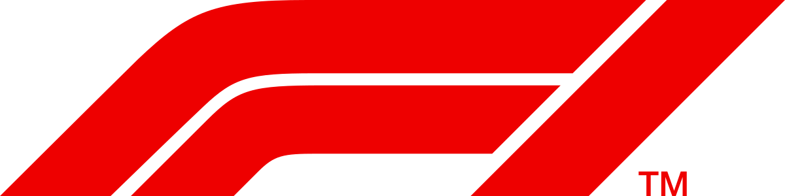

Itt megtalálhatsz fontosabb alapinformációkat rólam.
| Főoldal | Magamról | Tanulmányaim | Weboldaltervek |
|
Mócza Tamás István a nevem.
Eléggé reál beállítottságú ember vagyok, a matematika és a fizika világának rabja vagyok, de nem ódzkodom a humán elfoglaltságoktól.
Például szabadidőmben, ha van, szoktam rajzolni, zenét hallgatni, filmeket, sorozatokat nézni. Kedvenc zenei műfajaim a pop, rock (nem a heavy metal:D), jazz.
Ha meg kellene neveznem kedvenc előadót, akkor Kovács Ákost mondanám. Véleményem szerint nagyon jó zenéi vannak, és többféle műfajt is lefednek, tehát elég változatos a repertoárja.
Továbbá nagy sportrajongó is vagyok, főleg a Forma-1-et szoktam aktívan követni, kb. 2006 óta. Nagy kedvenceim a pilóták közül: 
Még nagyon sokmindent tudnék magamról mesélni, de inkább elmondom pár tulajdonságomat. Szorgalmas, tudásra szomjas, ambíciózus embernek tartom magam. Rengeteg időt töltök a jövőn való gondolkodással. Sajnos ezzel a mentalitással együtt jár egy kis perfekcionizmus is, kissé nehezen viselem, ha valami nem pontosan a terveim szerint alakul. Emellett nagyon őszinte embernek tartom magam, nagyon nem szeretek hazudni másoknak, vagy titkolózni előttük. Imádok kipróbálni új dolgokat, az élet majdnem bármely területén. Habár igyekszem kritikusan gondolkodni, sajnos sokszor megesik, hogy több jót látok bele egy-egy emberbe, mint amennyi valóban van bennük. De ha valaki tényleg mellettem áll a nehéz időkben, az olyan embereket nagyon szoktam értékelni. |
|||